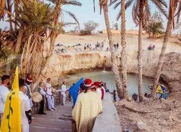
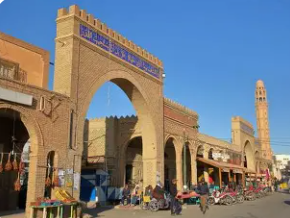
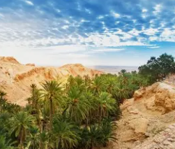
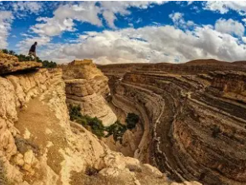
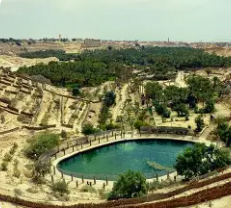

Perle du Désert

Tozeur est un gouvernorat situé dans le sud-ouest de la Tunisie, au cœur du Sahara. C'est la porte du désert tunisien, une région d'oasis luxuriantes, de lacs salés et de paysages désertiques à couper le souffle.
La ville de Tozeur, chef-lieu du gouvernorat, est une oasis historique célèbre pour son architecture en briques jaunes disposées en motifs géométriques traditionnels. Elle est un point de départ privilégié pour l'exploration du Sahara.
Le gouvernorat se distingue par ses oasis parmi les plus belles d'Afrique du Nord, le Chott el-Jérid (plus grand lac salé du Sahara), ses décors de cinéma mythiques (Star Wars), ses dattes "Deglet Nour" réputées mondialement, et son architecture saharienne unique.
Oasis luxuriante de 400 000 palmiers s'étendant sur 1000 hectares. Système d'irrigation ancestral sophistiqué, jardins verdoyants, sources naturelles. Agriculture à trois étages traditionnelle.
Médina unique avec façades en briques jaunes disposées en motifs géométriques complexes. Quartiers Ouled el-Hadef et Bled el-Hader. Style architectural saharien distinctif et raffiné.
Plus grand lac salé du Sahara (5000 km²). Paysages surréalistes de sel cristallisé, mirages spectaculaires, couchers de soleil magiques. Désert blanc immaculé scintillant.
Décors de Star Wars préservés (Mos Espa, planète Tatooine). Le Patient Anglais, Indiana Jones tournés dans la région. Paysages désertiques mythiques du septième art.

Quartier historique aux façades ornées de briques disposées en motifs géométriques élaborés. Architecture traditionnelle unique au monde datant du XIVe siècle. Ruelles ombragées, portes sculptées, patios secrets. Chef-d'œuvre d'architecture saharienne mêlant beauté et fraîcheur.

Oasis de montagne spectaculaire nichée au pied de falaises ocre. Cascade naturelle alimentant palmeraie verdoyante au milieu du désert. Village abandonné perché, paysages lunaires. Lieu de tournage du Patient Anglais, beauté sauvage saisissante.

Tamerza, la plus grande oasis de montagne avec cascade spectaculaire et gorges profondes. Village fantôme abandonné après inondations de 1969. Mides et ses gorges vertigineuses de 45 mètres. Canyons impressionnants, palmiers sauvages, décors naturels époustouflants.

Oasis sacrée historique avec la "Corbeille", dépression circulaire de 10 hectares remplie de 152 sources naturelles. Palmeraie luxuriante, zaouïas soufies, architecture religieuse. Ville mystique et spirituelle, capitale du soufisme tunisien. Décors de Star Wars Episode IV.